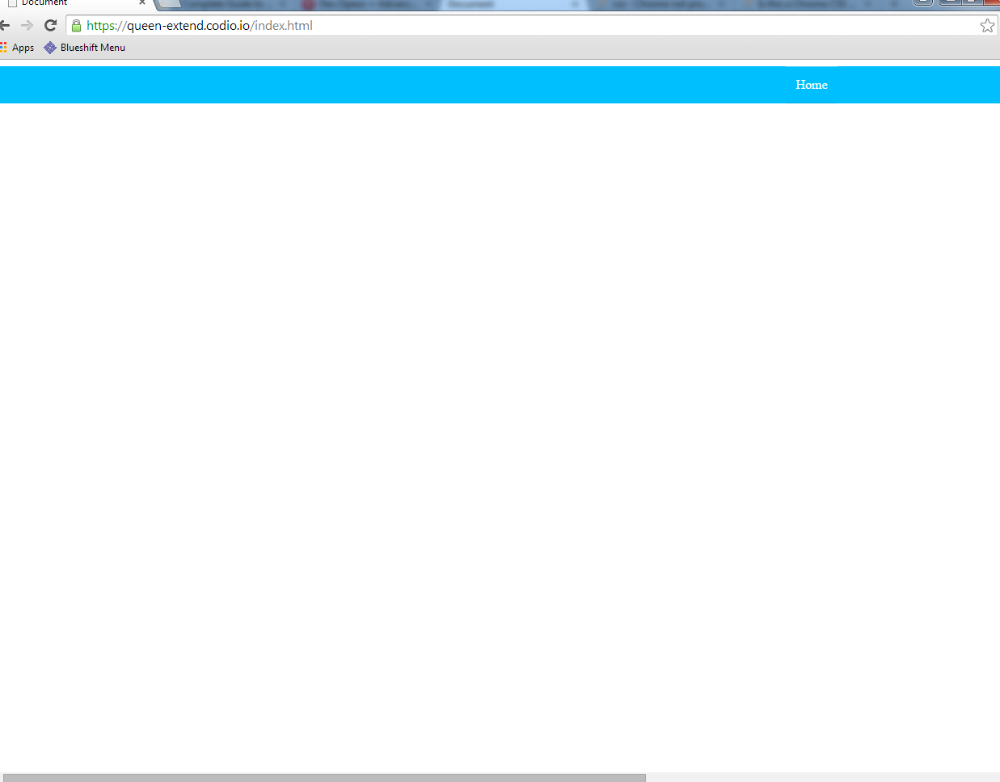

Cómo lo voy a resolver?
CanIuse? Flexbox, alcance, soporte... etc.
Elementos nav.navigation con 4 links: Home | About | Products | Contact
ModerIE IE edge
CSS main.css
Cómo lo voy a resolver?
CanIuse? Flexbox, alcance, soporte... etc.
Elementos nav.navigation con 4 links: Home | About | Products | Contact
ModerIE IE edge
CSS main.css
Mini-reset:
.navigation le ponemos: margin y padding en 0, list-style en none y un color de fondo (deepskyblue);
Display: Flex
Explicación... display flex al Parent, puede tener propiedades como lo son:
flex-direction + flex-wrap : flex-flow
justify-content, align-items, align-content
Y las propiedades de los Children:
order, align-self
flex-grow + flex-shrink + flex-basis: flex
A la .navigation:
Para MS syntaxis viejo (display: -ms-Flexbox; -ms-box-orient: horizontal;)
Luego display: --flex y --flex-flow: column wrap; Con los prefixes donde van los --
Text decoration en none, block, text align center, padding 0.8rem, color blanco
Bordes: top 1px solid blanco 0.3 alpha y el bottom 1px solid negro 0.1 alpha;
En el hover: color de fondo(dodgerblue);
Y vamos a usar un selector, en el .navigation a:last-of-type border bottom none;
Entendiendo la Fórmula de medidas en Rem: Medidas relativas como los %, em y rem etc. Parent > % el Parent.fontSize > em pero Parent.rootFontSize > Rem
rootFontSize 16px = 1rem;
Rem = px/16;
Primer breakpoint 600px más o menos
mobile First: @media all and (min-width: 600px) pero yo quiero rem no px 600/16 = 37.5rem
Media queries, algo así como if (true) ahora use esto; else stick with the plan;
IF TRUE
Aplique esto al .navigation : flex-flow: row wrap; con los prefixes, Opera no necesita
Y justify-content: space-around; con los prefixes menos el de webkit* después vamos a ver porqué...
@media all and (min-width: 50rem) (800px) más o menos
Aplique esto al .navigation:
justify-content: flex-end; con los prefixes menos el de webkit
Problema con Webkit, última versión osea, Chrome. Opera, Safari en Windows, Mac, Android, iOS, caos mundial...
Posiblemente no sobreescribe la propiedad justify-content, o la sobreescribe pero falla en renderizar el valor anterior
causando resultados inesperados

Comentario que yo puse : /*bug Chrome 40, target breakpoint and apply flex-end*/
/*If Webkit, Expected: space-around not flex-end*/
De último, después del soporte nativo, agregar -webkit-justify-content: space-around;
El propósito del tutorial es un Flex Demo, se requiere profundizar más
Retina display vs Breakpoints actuales
IE 8 y 9, Modernizr.js, HTML5 Boiler Plate, html5shiv